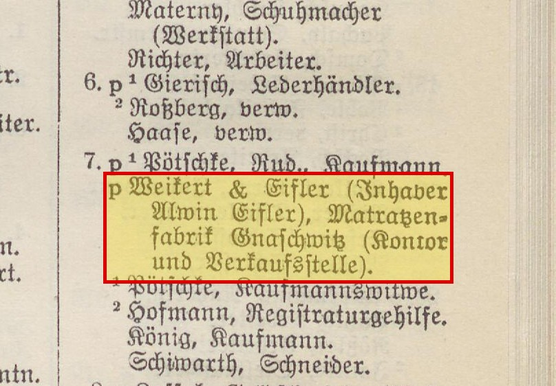
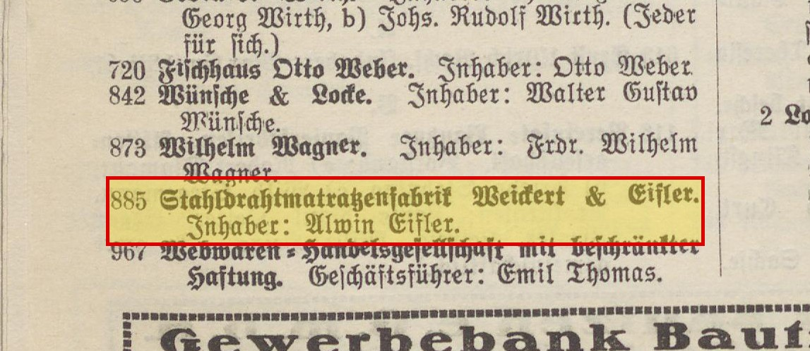
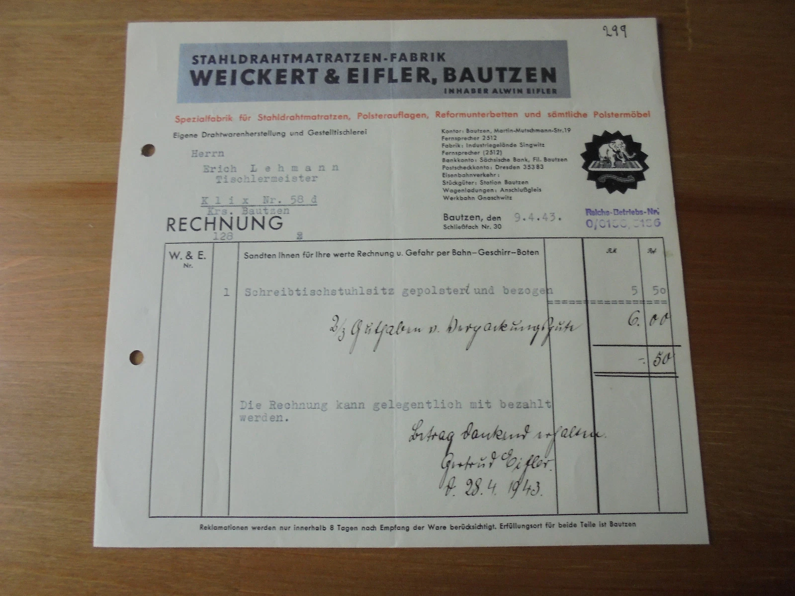

Stahldrahtmatratzen-Fabrik, Bautzen
Weickert & Eifler began as a small saddlery and upholstery shop in Bautzen and grew into a steel wire mattress factory in the Spree valley south of the town. This page tells its story from the records found so far. Where something is not yet certain, the text says so. The numbers in brackets link to the source.
The Firm at a Glance
| 1917 | No Eifler in the Bautzen town directory. Karl Weickert, master shoemaker, lives at Neusalzaer Straße 20. [2] |
| 1921 | “Weickert & Eifler” exists: Bruno Weickert’s saddlery and upholstery shop, Löbauer Straße 10, phone 512. [1] |
| 2 Oct 1926 | Alwin Eifler, “Fabrikant”, of Wendischer Graben 3, Bautzen, marries Gertrud Becker in Dresden. [3] |
| 1928 | Stahldrahtmatratzenfabrik Weickert & Eifler, owner Alwin Eifler, commercial register Nr. 885. Factory at Gnaschwitz; office and shop at Neusalzaer Straße 38. [4] |
| 1929 to 1932 | Same entries; office at Neusalzaer Straße 38 (one index of the 1932 book reads No. 36). The 1929 and 1932 books also list the firm's shop: “Weikert & Eifler (Inh.: Alw. Eifler), Matratzen-Niederlage, A. d. Fleischbänken 7, [telephone] 2512. Fabrik: Industriehof Gnaschwitz.” So by 1929 the firm sold its mattresses from a shop in the old town at An den Fleischbänken 7, near the Fleischmarkt, and made them at the Industriehof in Gnaschwitz. The same number, 2512, is Alwin Eifler’s own telephone in 1935. [Ancestry 1929][Ancestry 1932] [5][6] |
| 1935 | “Weickert & Eifler (Inhaber: A. Eifler), Martin-Mutschmann-Str. 19, Fernruf 2512.” [7] |
| 1938 | Commercial register A 173. Alwin Eifler, Fabrikant, owns the house at Martin-Mutschmann-Straße 19. [8] |
| 9 Apr 1943 | Invoice to a master carpenter at Klix; Gertrud Eifler signs the receipt on 28 April. [10] |
| after 1945 | Fate of the firm not yet found. The family still lives at No. 19 (now Wilthener Straße) in 1954 and 1973. [15][16] |
| Dec 1968 | According to the family chart, Alwin Eifler dies after a car accident. Not in the Bautzen town register for 1968; the death was registered at Zittau (1926 marriage entry, margin note (Ancestry)). [17] |
Every address on this page is on the family map.
A Saddler’s Shop, 1917 to 1921
The site used to say the firm was founded before the First World War. The records do not support that. The Bautzen directories of 1894, 1898, 1900, 1901 and 1917 list no Eifler at all [2], and Alwin Eifler was only 21 when the war began.
The earliest record of the firm is the Bautzen directory of 1921, page 121: “Weickert, Bruno, Sattlermeister (Fa.: Weickert & Eifler), Sattler- und Polstergeschäft, Löbauer Str. 10, Fernruf 512 (Wohnung: Neusalzaer Straße 34, II)” [1]. So in 1921 the firm was a master saddler’s saddlery and upholstery business at Löbauer Straße 10, with Bruno Weickert as the working craftsman. He lived at Neusalzaer Straße 34. The founding therefore probably falls between 1917 and 1921.
The same 1921 page lists “Karl, Schuhmachermstr., Neusalzaer Str. 20, II”, a master shoemaker. Karl Gottlieb Weickert is already at Neusalzaer Straße 20 in 1917 [2], and Bruno is at the same house in 1928 [4], so Karl is very likely Bruno’s father. Not yet proven.
Upholstery is the link to what came later: the factory’s range still included upholstered toppers and upholstered furniture alongside its wire mattresses [9].
Alwin Eifler from Sohland
Ernst Alwin Eifler was born on 7 October 1892 in Sohland an der Spree, a village in the Upper Lusatian uplands south of Bautzen. His marriage entry gives the place and cites his birth entry in the Sohland register [3].
On 2 October 1926, at the Dresden V registry office (1926 Nr. 352), Alwin, described as a Fabrikant (manufacturer) living at Wendischer Graben 3, Bautzen, married Gertrud Elise Becker, 21, of Rothermundtstraße 5, Dresden. The witnesses were Ernst Eifler, a farmer (Landwirt) of Sohland an der Spree Nr. 247, aged 61, and the bride’s father, the merchant Richard Becker, 51 [3].
Ernst Eifler of Sohland, born about 1865, is very probably Alwin’s father. The Sohland birth entry of 1892 will settle it.
Being called Fabrikant in 1926 shows that Alwin already saw himself as a manufacturer, not a shopkeeper. His name had been in the firm name since at least 1921 [1].
The Mattress Factory, 1928 to 1932
By 1928 the firm is a factory. The Bautzen directory lists “Weikert & Eifler (Inhaber Alwin Eifler), Matratzenfabrik Gnaschwitz (Kontor und Verkaufsstelle)”, with the office and shop at Neusalzaer Straße 38, rear building. The commercial register section reads: “885 Stahldrahtmatratzenfabrik Weickert & Eifler. Inhaber: Alwin Eifler.” Alwin himself is listed as Kaufmann at Neusalzaer Straße 38 [4].
So by 1928 Alwin was the sole owner (Inhaber). Bruno Weickert is listed that year as a master saddler at Neusalzaer Straße 20, no longer as a partner [4]. When and why he left is not yet known; the commercial register file would show it.
The 1929 and 1932 directories repeat the entries [5][6]. One index of the 1932 book reads No. 36 instead of 38; the two houses are next door to each other.

Bautzen directory 1928: “Weikert & Eifler (Inhaber Alwin Eifler), Matratzenfabrik Gnaschwitz (Kontor und Verkaufsstelle)”. SLUB Dresden, public domain.

Bautzen directory 1928, commercial register: “885 Stahldrahtmatratzenfabrik Weickert & Eifler. Inhaber: Alwin Eifler.” SLUB Dresden, public domain.
The Factory in the Spree Valley
The factory stood in the Spree valley at Gnaschwitz and Singwitz, about 6 km south of Bautzen. The 1928 directory names Gnaschwitz [4]; the later letterhead says the works were on the Industriegelände Singwitz, with a private siding (Anschlußgleis) on the works railway at Gnaschwitz [9].
That industrial estate had a history of its own. The Royal Saxon powder factory at Gnaschwitz, founded in 1874, was greatly enlarged in the First World War, and in 1916 a works railway was built from Großdöbschütz down the valley to serve it and the Singwitz paper mill. The powder factory closed on 27 December 1919. From 1920 an Interessengemeinschaft Industriegelände Singwitz let its spare buildings to new firms: a fountain pen factory came in 1922 and a farm machinery maker in 1927 [12][13][14]. Weickert & Eifler was one of these newcomers, and the old works railway explains how a small Bautzen firm came to have its own rail siding.
Which building the firm used, and whether it still stands, is not yet known. The local history book by Jünger, Die Industriegeschichte des Spreetales zwischen Singwitz und Gnaschwitz (Heimatverein Obergurig, 2011), may name it [12].
The “Elite” Mattress and its Patent
The letterhead advertises the “Elite” steel wire mattress, “die beste aller Matratzen”, under German Reich patent Nr. 435041, with an elephant standing on a mattress as the trademark. It also lists upholstered toppers (Polsterauflagen), “reform” under-mattresses (Reformunterbetten) and upholstered furniture, and says the firm made its own wire goods and its own wooden frames (eigene Drahtwarenherstellung und Gestelltischlerei) [9].
The site used to call the patent the firm’s own. Patent 435041, “Netzmatratze”, belongs to August Filter of Hannover: patented from 12 July 1925 and published 6 October 1926 [11]. Weickert & Eifler made mattresses under Filter’s patent, most likely by licence . This also means the letterhead was printed after October 1926.

Advertising letterhead, Weickert & Eifler, Bautzen. The address Martin-Mutschmann-Straße 19 dates it to 1933 to 1945. Family collection.
Martin-Mutschmann-Straße 19
By 1935 the firm had moved its office to Martin-Mutschmann-Straße 19, phone 2512: “Weickert & Eifler (Inhaber: A. Eifler)” [7]. The site used to say the office was there “by the 1930s”; the records show Neusalzaer Straße 38 until at least 1932 and this address from 1935.
In 1938 the directory lists Alwin Eifler, Kaufmann, at No. 19, phone 2512, and the house list names the owner of No. 19 as “Eifler, Alwin, Fabrikant”. The commercial register entry is now A 173 [8]. The family’s own copy of a directory page, long thought to be about Thomas's father, is this 1938 page 14 with Alwin Eifler’s line.
The street was named after the Nazi governor of Saxony from about 1933 to 1945; its name before and after is Wilthener Straße [18]. The family stayed in the house: Gertrud’s mother Clara Becker died there in 1954 and Gertrud in 1973, both recorded at “Wilthener Straße 19” [15][16].

Bautzen directory 1938, house list: Martin-Mutschmann-Straße 19, owner “Eifler, Alwin, Fabrikant”. SLUB Dresden, public domain.

The family’s copy of page 14 of the 1938 Bautzen directory: “Eifler, Alwin, Kaufmann, Martin-Mutschmann-Str. 19”. Identified against the SLUB scan, image 56. Family collection.
The War Years
One business paper survives from the war: an invoice dated 9 April 1943 to Tischlermeister (master carpenter) Erich Lehmann of Klix Nr. 58d, Kreis Bautzen, for one upholstered desk-chair seat at 5,50 Reichsmark plus handling. The firm’s Reichs-Betriebs-Nr. is stamped at the top. At the bottom Gertrud wrote: “Betrag dankend erhalten. Gertrud Eifler. d. 28.4.1943.” [10]
The stamp at the top of the 1943 invoice is faint, but it reads “Reichs-Betriebs-Nr. 0/0156/5156”. The same number appears in a collectors’ register of these wartime company numbers, against “Weickert und Eifler Matratzen, Bautzen”. So the firm had its own Reichs-Betriebs-Nummer 0/0156/5156. [RB register, Militaria Plaza] [Invoice stamp, enlarged]
Some history of these numbers: they were given to firms from 1942. From 1943 they were often stamped on uniforms and equipment for the Wehrmacht in place of the maker’s name, so that an enemy could not tell who made what. [Wikipedia: Reichsbetriebsnummer]
This is a clue still being checked. Collectors list a number like this because it has turned up on a piece of wartime equipment. That suggests the firm supplied something to the armed forces, perhaps mattresses or upholstered goods, but what it was is not known. A question to the collector about which item carried the number would need Sebastian’s agreement first.
The invoice shows that Gertrud signed for the firm. The site used to say she ran the books; one signature does not prove that, though it is possible. The letterhead also gives the firm’s banking: Sächsische Bank, Bautzen branch, postal giro Dresden 35383, PO box 30 [9].

Invoice, 9 April 1943, with Gertrud Eifler’s receipt of 28 April 1943. Family collection.
Some history of the town: Bautzen was declared a fortress at the end of the war. The fighting in and around the town lasted from 19 to 26 April 1945. About 6,500 soldiers fell on each side in and around the town and about 350 civilians were killed; about a tenth of the houses and a third of the flats were destroyed. [Wikipedia: Schlacht um Bautzen] How the Eiflers and their firm came through those days is not known.
After 1945
What happened to Weickert & Eifler after the war has not been found yet. In Saxony many private firms were expropriated after the referendum of 30 June 1946 [Wikipedia]. Next door on the same industrial estate, the fountain pen maker Gerhard Joh. Quaas was expropriated in 1946 and became VEB Schreibgerätewerk Markant [14]. That is context only; it does not tell us what happened to this firm.
The family itself stayed in Bautzen. They are at Wilthener Straße 19 in 1954 and 1973 [15][16].
The family chart says Alwin died on 18 December 1968 of a skull fracture after a car accident. His death is not in the Bautzen town death index or register for 1968 [17], because it was registered at Zittau: a note stamped on his 1926 marriage entry in Dresden on 6 November 1969 gives Standesamt Zittau, Nr. 1169/1968 (1926 marriage entry, margin note (Ancestry)). Gertrud is recorded as a widow in 1973 [16].
Background: the Firm’s Streets and Towns
Some history of the streets and towns. These notes describe the places, not the family. They come from the town archive’s list of Bautzen street names and from old reference books.
An den Fleischbänken, where the firm had its mattress shop at No. 7 in 1929 and 1932, is named after the town’s butchers’ stalls: a double row of small shops joined to the Fleischergasse by steps. Around 1400 they were the only butchers’ shops in Bautzen. They were rebuilt in stone in 1716 and renewed in 1842. [Archivverbund Bautzen, street names]
Neusalzaer Straße, where the firm had its office at No. 38 and the Weickerts lived at Nos. 20 and 34, was called Klement-Gottwald-Straße in GDR times, until 1990. The medieval town gallows stood near it, on the Galgenberg. [Archivverbund Bautzen, street names]
Wendischer Graben, where Alwin Eifler lived in 1926, is named after the Sorbs (the Wends) and the old town moats. The archive list appears to show that the name was dropped in October 1940, in the Nazi years, and came back in 1945. [Archivverbund Bautzen, street names]
Fischergasse, where Bruno Weickert died in 1956, was the old fishermen’s settlement below the town. Photographs from 1946 and 1950 show houses on the Fischergasse in ruins after the fighting of April 1945; whether No. 31 itself was hit is not known. [Archivverbund Bautzen, street names]
Großschönau, where Bruno Weickert was born in 1892, was the centre of damask weaving in the German Empire. In 1885 it had 5,934 inhabitants, and about 4,000 people worked there weaving fine table linen with woven pictures. [Meyers 1888: Großschönau]
Everyone Involved
Ernst Alwin Eifler (1892 to 1968). Partner by 1921, sole owner from at least 1928 to at least 1943. Born in Sohland an der Spree. Christa Kohlmann’s father. [1][3][4][8]
Bruno Weickert. Master saddler, the “Weickert” of the firm. Ran the saddlery and upholstery shop at Löbauer Straße 10 in 1921, living at Neusalzaer Straße 34; at Neusalzaer Straße 20 from 1924 to 1928, no longer named in the firm. Born on 2 December 1892 in Großschönau near Zittau, eight weeks after Alwin, so the two founders were the same age. He married Marie Martha Kuschel, a seamstress, in Bautzen on 7 September 1918, while serving as a reserve gunner at the front. He died at home, Fischergasse 31, on 26 March 1956, aged 63. On the map he is shown as a business associate, not as family. [Death register 1956, Nr. 225] [1][4]
Karl Gottlieb Weickert. Master shoemaker, Neusalzaer Straße 20, already in 1905 (“Weickert, K. Gottl., Schuhmacher”) and in 1917 and 1921. Probably Bruno’s father. The Bautzen death name index has no Weickert for 1921. In 1922 it lists a Karl Gottfried Weickert, a miller “auf Wanderschaft” (on the road, with no fixed home), who is a different man. [Death name index 1922, p. 75] [Ancestry 1905] [1][2]
Johanne Weickert, née Albert, widow, at Neusalzaer Straße 20 from 1924 to at least 1935; Bruno lived in the same house in 1924, 1925 and 1928 (in 1921 he was at No. 34). Perhaps Karl’s widow and Bruno’s mother. A second widow, Helene Weickert née Maucksch, lived at Neugraben 1. [Ancestry 1925][Ancestry 1935] [4]
Gertrud Elise Eifler, née Becker (1905 to 1973). Alwin’s wife; signed for the firm in 1943. [3][10][16]
Ernst Eifler (born about 1865). Farmer at Sohland an der Spree Nr. 247; witness at Alwin’s wedding. Probably Alwin’s father. [3]
Richard Hermann Becker (1875 to 1938). Gertrud’s father, an ironmonger in Dresden; the second witness at the wedding. [3]
Erich Lehmann. Master carpenter at Klix, a customer in 1943. [10]
August Filter of Hannover. Holder of the “Netzmatratze” patent 435041 used on the Elite mattress. Not connected to the family. [11]
No employees’ names have been found yet. The commercial register file and any post-1945 files would name managers, Prokuristen or a trustee.
What Comes Next
- The commercial register file of the Amtsgericht Bautzen (Handelsregister Nr. 885, later A 173), at the Staatsfilialarchiv Bautzen: founding date, Bruno Weickert’s exit, and the end of the firm.
- Post-1945 files: expropriation, trustee or trade files in the Kreis Bautzen records.
- Alwin’s Zittau death entry of December 1968 (Nr. 1169/1968, as read), and a newspaper report of the accident.
- Jünger’s 2011 history of the Singwitz and Gnaschwitz industrial valley, for the factory building.
- Photographs, more invoices or advertisements in family hands.
Sources
- Adressbuch Bautzen 1921, p. 121 (Ancestry)
- Einwohnerbuch Bautzen 1917, image 20 and 106 (SLUB)
- Marriage register Dresden V 1926 Nr. 352 (Ancestry)
- Adressbuch Bautzen 1928, images 73, 179, 201, 366 (SLUB)
- Adressbuch Bautzen 1929 (SLUB)
- Adressbuch Bautzen 1932 (Ancestry index)
- Adressbuch Bautzen 1935, p. 141 (Ancestry)
- Adressbuch Bautzen 1938, images 56, 236, 292 (SLUB)
- Weickert & Eifler letterhead, 1933 to 1945 (family collection)
- Weickert & Eifler invoice, 9 April 1943 (family collection)
- Reich patent 435041, August Filter (Google Patents)
- Sachsenschiene: the Gnaschwitz works railway
- Historischer Stammtisch: Singwitz timeline
- Wikipedia: Singwitz, Industriegelände
- Bautzen death register 1954 Nr. 881 (Findbuch.net, PDF page 882)
- Bautzen death register 1973 Nr. 1052 (Findbuch.net, PDF page 1054)
- Bautzen death index 1968, letter E (Findbuch.net, PDF page 15)
- Archivverbund Bautzen: historical street names
Ancestry records need a subscription to view and are not reproduced here. SLUB Dresden directory scans are public domain. Findbuch.net register scans are from the Archivverbund Bautzen, CC BY 4.0.